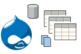

Backing up and migrating: where content is stored in Drupal database tables and files
 You need to backup your Drupal 7 database and site, possibly because you have finished testing and want to move it to the live web server. The problem: you don't want to waste space backing up LARGE tables or files that you don't need, but are unsure which tables and files in your Drupal site to ignore. The solution: Adelle's guide to Drupal 7 tables and files (see below).
- Drupal is Data
- Drupal is Files
- Drupal is Tables
- Types of data
- Tips on database backups
- Tables NOT to backup
- Tables to ALWAYS backup
- How to find table explanations
- For more information
Drupal is data
When you move sites that live in Drupal, you have to know where this data is stored. There are 2 places to find data for Drupal: the file system and the database.
Drupal is files
Types of files
Once you've installed Drupal, there are two types of files on your web server: customized and contributed.
- Contributed files are ones that you downloaded, probably from drupal.org/download as core files, modules or themes; or perhaps external libraries such as CKeditor. The important point here is that you did not hack contributed files, so they are easy to replace with copies from the same place you got the original files, assuming you have recorded which version of each module, theme, or library you were using.
- Customized files, on the other hand, contain code that you created when you set up and are using your Drupal site. These customized files would be hard to replace and so need to be carefully and regularly backed up, both with regular archiving and, especially, when moving sites or before overwriting them to perform an update.
Commonly customized files & folders to backup
Some of the files you are most likely to need to backup before updating or moving your Drupal site include:
- Most of the files in the ROOT/sites/ folder, which is usually very large. You don't need to backup up theme, module, or library code that you have not changed, only that which you've hacked. A common organization you will see within a single-site Drupal ROOT/sites/ folder (where asterisks indicate a folder or file that does NOT need backed up) is:
- example.sites.php*
- all
- themes
- zen*
- MYCUSTOMIZEDTHEME
- modules
- contrib*
- custom
- features
- libraries*
- themes
- default
- settings.php
- default.settings.php*
- files
- images
- documents
- private
- If you created your own install profile, you need to save the ROOT/profiles/YOURCUSTOMIZEDprofilefolder/ folder
- If you've changed either of these 2 files that control redirection, authentication and what's hidden from major search engines, you'll want to also back up:
- ROOT/.htaccess
- ROOT/robots.txt
Why settings.php matters
If you look at the settings.php source code on Drupal.org, you will find two very important things stored here that you will NOT want to lose:
- the hash salt value: set when you first install drupal, the hash salt enhances your data's security by encrypting it but, without it, much of your information will become indecipherable
- the database connection values: the name of your database, and the username and password of the account you are allowing to have such power over this database.
Drupal is tables
Types of data
In general, Drupal database tables contain one of these types of data:
- Configuration: variables and settings used by Drupal and its modules or themes.
- Content: organized stuff or "things with fields". Some common types of content include:
- users
- comments
- files
- taxonomy terms (tags)
- nodes (pages, articles, etc.)
- blocks
- views (reports)
- rules (workflows)
- Cache: store the results of the dynamic content Drupal builds for you and re-use it, so that Drupal runs faster because doesn't have to re-build every time that page is visited.
Tips on database backups
- The main tables you will want to backup for Drupal are the hard-to-recreate tables for configuration and content, but not the easily-rebuildable cache and indexing tables.
- In terms of scaleability and copying ENTIRE databases, you will need to copy the STRUCTURE of all tables, but there are tables whose CONTENT or DATA might not need to be copied. In fact, a great way to condense the SQL you export is to do downloads of, first, the structure of all tables, and then do separate exports of just the data for certain tables. This can be helpful when you are importing this SQL back in, so that your phpmyadmin interface doesn't run out memory and stop importing halfway through your backup.
- Finally, make sure to change the database name in the SQL you exported when you are re-importing it into your new, differently-named database.
Drupal tables to (probably) NOT backup
You will still need to backup the structure of these tables, but you can ignore their data, unless you need to keep it for audit trails or other site-specific reasons:
- any table with 'cache' in the name (CORE owned by system, others by a specific contributed module, such as views or ctools)
- any table that starts with 'search' in its name (CORE owned by search)
- any table with 0 (no) records in it
- advanced_help_index: stores search index correlations for advanced help topics (owned by advanced_help).
- authmap: stores distributed authentication mapping for users (owned by user), may be dropped in D8.
- batch: stores details about batches, processes that run in multiple HTTP requests (owned by system).
- flood: flood controls the threshold of events, such as the number of contact attempts (owned by system).
- history: records which users have read which nodes (owned by node).
- menu_router: a sneaky cached table that is rebuilt based on the menu_links and menu_custom tables.
- node_comment_statistics: keeps statistics of node and comments posts to show "new" and "updated" flags (owned by comment).
- queue: stores tasks that need to be run periodically in sequentially-ordered lists, so that you don't have to worry about running out of memory (for long-running tasks) or about two tasks trying to do the same thing at the same time (owned by system), used by cron, update, batch API, and aggregator modules
- semaphore: holds locks (to prevent requests from executing same code at same time) and flags for the database (owned by system).
- sequences: stores unique numbers, may not be used much in D7 and may even be removed in D8 (owned by system), sometimes used by action, batch, trigger, and update modules.
- sessions: each record represents a user session, either anonymous or authenticated (owned by system).
- tracker_node & tracker_user: tracks when nodes were last changed or commented on and by which user (owned by tracker).
- watchdog: logs all system events (owned by dblog)
Drupal tables to ALWAYS backup
This is not a comprehensive list of tables to export the DATA for, but it gives you an idea of where to start:
- any table that begins with 'field': these hold most of your content
- actions
- block
- blocked_ips
- block_custom
- block_node_type
- block_role
- comment
- date_formats
- date_format_locale
- date_format_type
- file_managed
- file_usage
- filter
- filter_format
- image_effects
- image_styles
- menu_custom
- menu_links
- node
- node_access
- node_revision
- node_type
- registry
- registry_file
- role
- role_permission
- system
- url_alias
- users
- users_roles
- variable
- views_data_export
- views_display (owned by views)
- views_view (owned by views)
- Drupal 6 list of tables explained by Andrew Sterling Hanenkamp
How to discover what a Drupal table does
Question 1: As you learn about new tables, how do you find out what they are supposed to be doing on your site?
Answer 1: Search the API on Drupal.org or on Drupalize.me.
Question 2: What words should you search for those APIs for?
Answer 2: Each table in Drupal is supposed to be created when its module is installed (in the .install file) by a function that ends with '_schema'. For example, if the table you are researching is part of the search module, then what you need to search for is probably 'search_schema'. To see what sorts of tables are being created by Drupal's core, start to type '_schema' into the search box at http://api.drupal.org/ and a long list of suggestions should drop down. You can do the same for contributed modules at http://api.drupalize.me.
Question 3: I learn better visually, can you show me a diagram or sketch that shows how all these tables work together in Drupal?
Answer 3: Some very smart people have created just such visual aids, see ursula's excellent collection of Drupal 7 database diagrams and moofie's great visual for Drupal 6.
For More Information
- Drupal 7's tables
- Upgrading from Drupal 6 to 7 (Drupal.org)
- Migrate Drupal 6 to Drupal 7 (OSTraining)
- My Drupal 6 to 7 Upgrade Process (Blog)
- Upgrade from Drupal 6 to 7, how hard is it? (Blog)
- Which Drupal tables are safe to manually clear using phpmyadmin? (StackExchange)
- Feeds & Migrate modules (Drupal.org)
- Migrating old HTML files into Drupal (4 Kitchens)
- DrupalCon Denver sessions: non-technical and more technical session1 and session2
- Glossary of words used in Drupal
- D7 Usage of Foreign Keys in Schema API and current default FK ERD
- Excellent overview of queue in Drupal 7 (see related slides)
- Sync Staging (From Staging to Production as Simply as Possible) | groups.drupal.org
- A beginners guide to caching data in Drupal 7
- How sequences relates to other module tables